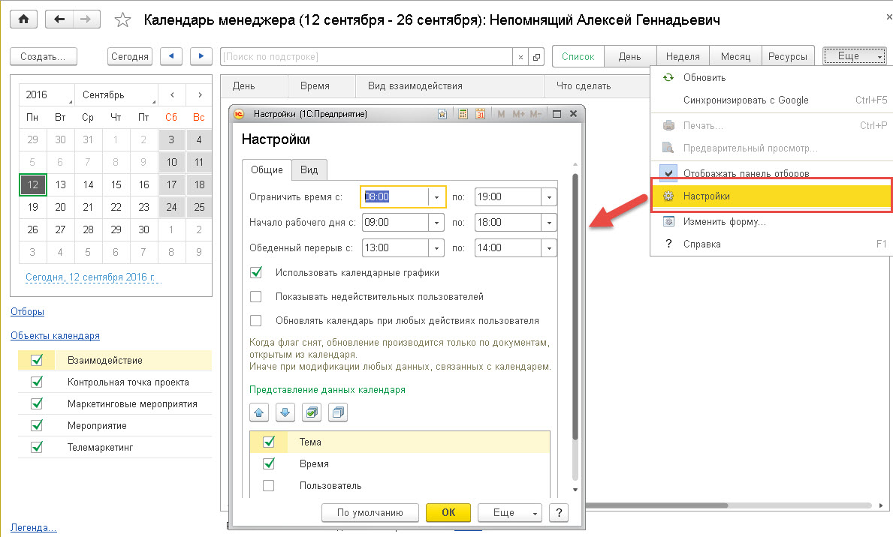
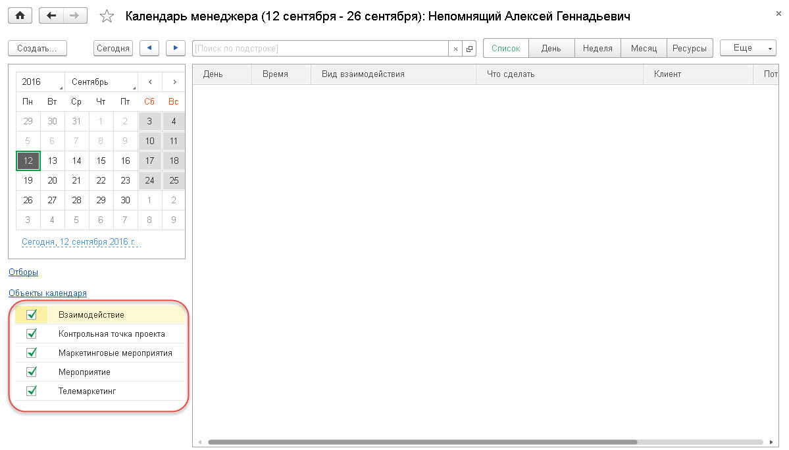
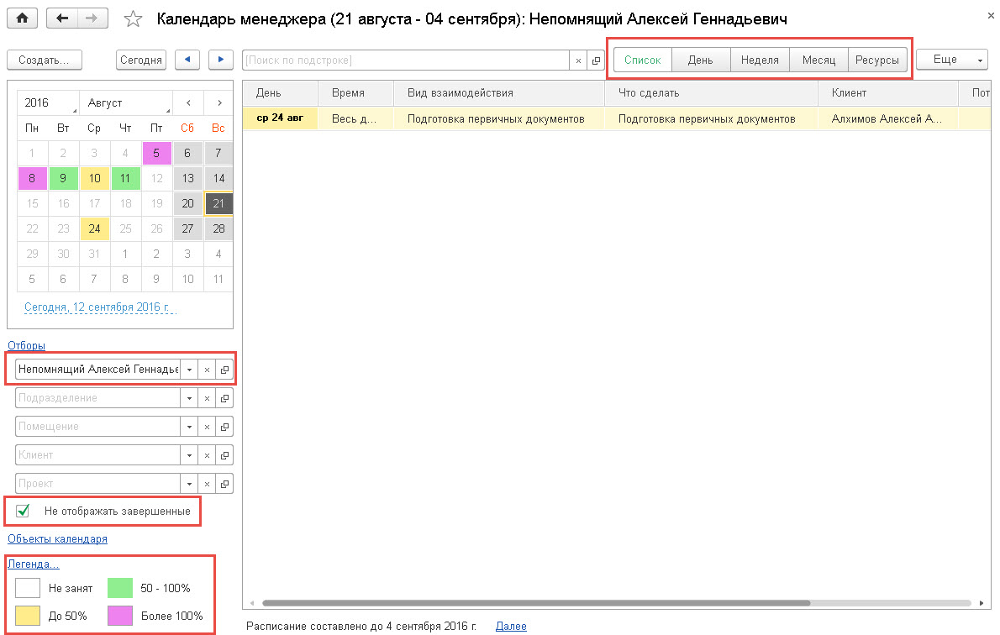
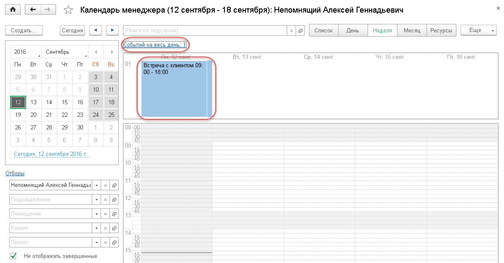
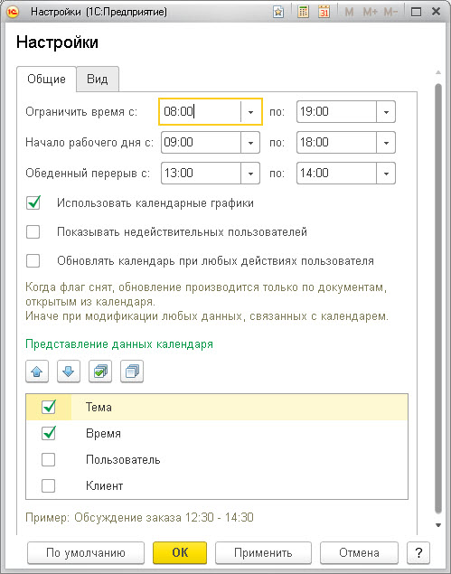
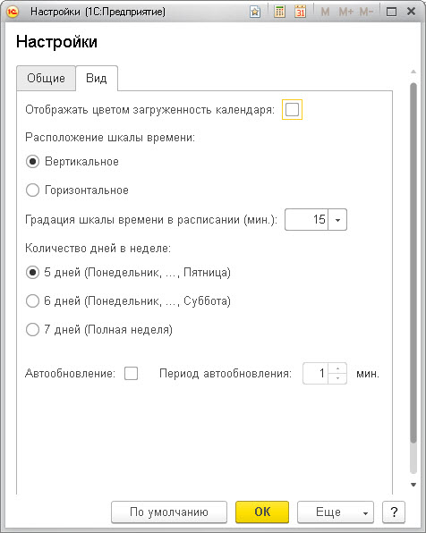
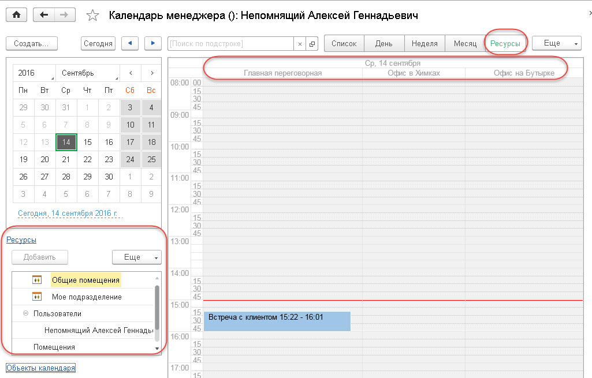

<!DOCTYPE html PUBLIC "-//W3C//DTD HTML 4.0 Transitional//EN"><html xmlns:o="urn:schemas-microsoft-com:office:office"><head><meta content="text/html; charset=utf-8" http-equiv="Content-Type"></meta><link rel="stylesheet" type="text/css" href="v8help://service_book/service_style"></link><meta name="GENERATOR" content="MSHTML 11.00.9600.18212"></meta></head><body>
<h1><font color="#333399">Календарь менеджера по продажам</font></h1>
<p style="MARGIN-BOTTOM: 0cm; LINE-HEIGHT: 1; TEXT-INDENT: 1.25cm" align="justify"><font face="Times New Roman, serif"><font size="4"><font size="3"></font></font></font> </p>
<p style="MARGIN-BOTTOM: 0cm; LINE-HEIGHT: 1; TEXT-INDENT: 1.25cm" align="justify"><font face="Times New Roman, serif"><font size="4"><font size="3"> <strong>Календарь менеджера</strong> — это основное рабочее место пользователя для управления рабочим временем, задачами и организации совместных или индивидуальных встреч пользователя (мероприятий). Рабочее место можно настраивать: добавлять, убирать отображаемые формы ( <strong>«Главное меню» — «Вид» — «Настройки»</strong>).</font></font></font></p>
<p style="MARGIN-BOTTOM: 0cm; LINE-HEIGHT: 1; TEXT-INDENT: 1.25cm" align="justify"> </p>
<p style="MARGIN-BOTTOM: 0cm; LINE-HEIGHT: 1; TEXT-INDENT: 1.25cm" align="justify"><font size="3" face="Times New Roman"></font> </p>
<p style="MARGIN-BOTTOM: 0cm; LINE-HEIGHT: 1; TEXT-INDENT: 1.25cm" align="justify"></img></p>
<p style="MARGIN-BOTTOM: 0cm; LINE-HEIGHT: 1; TEXT-INDENT: 1.25cm" align="justify"> </p>
<p style="MARGIN-BOTTOM: 0cm; LINE-HEIGHT: 1; TEXT-INDENT: 1.25cm" align="justify"><font size="3" face="Times New Roman"></font> </p>
<p style="MARGIN-BOTTOM: 0cm; LINE-HEIGHT: 1; TEXT-INDENT: 1.25cm" align="justify"><font size="3" face="Times New Roman">В календаре отображаются все запланированные взаимодействия для сотрудника: встречи с клиентами, телефонные звонки, запланированные действия.<br>Установкой соответствующих флажков в области <strong>«Объекты календаря»</strong> задается вывод в календарь Контрольных точек проектов, Маркетинговых мероприятий, Мероприятий, документов Телемаркетинг (флажок <strong>«Контрольная точка проекта»</strong> используется для версии «1С:CRM КОРП» Редакция 3.0).</font></p>
<p style="MARGIN-BOTTOM: 0cm; LINE-HEIGHT: 1; TEXT-INDENT: 1.25cm" align="justify"><font size="3" face="Times New Roman"></font> </p>
<p><font size="3" face="Times New Roman">            </img></font></p>
<p><font size="3" face="Times New Roman"> <strong>            </strong>Информацию в календаре менеджера можно просматривать в одном из следующих режимов:<br><strong>             • «Список»;<br>             • «День»;<br>             • «Неделя»;<br>             • «Месяц»;<br>             • «Ресурсы».</strong></font></p>
<blockquote style="MARGIN-RIGHT: 0px" dir="ltr">
<p><font size="3" face="Times New Roman">   В левой части формы календаря менеджера задается период отображения информации в календаре.<br>   По нажатию гиперссылки <strong>«Отборы»</strong> отображаются поля для задания фильтров по подразделению, помещению, клиенту, проекту, пользователю.</font></p>
<p style="MARGIN-RIGHT: 0px" dir="ltr"><font size="3" face="Times New Roman">             <br><strong><font color="#ff0000">Подсказка при работе!<br></font></strong>   <em>По умолчанию на рабочем столе отбор задан по пользователю. В области отборов должен быть задан хотя бы один фильтр. Невозможно очистить все поля отборов одновременно.</em></font></p>
<p><font size="3" face="Times New Roman">   Если установлен флажок <strong>«Не отображать завершенные»</strong>, то в списке отображаются только незавершенные взаимодействия.</font><font size="3" face="Times New Roman"><br>   По гиперссылке <strong>«Легенда»</strong> можно увидеть расшифровку цвета окрашивания дней недели в календаре — это загрузка в баллах дня по менеджеру.</font></p>
<p><font size="3" face="Times New Roman"></img></font></p>
<p><font size="3" face="Times New Roman">       Если пользователь создает документ <strong>«Мероприятие»</strong> и устанавливает в нем флажок <strong>«На весь день»</strong> (запланировано на выполнение в любое время заданного рабочего дня), то такое взаимодействие с клиентом будет отображаться в области запланированных на весь день взаимодействий. Эта область расположена над табличной частью календаря менеджера и открывается/сворачивается по нажатию на гиперссылку <strong>«Событий на весь день: &lt;Количество событий&gt;».</strong> Для отображения данной области в календаре должна быть указана дата сегодняшнего дня.</font></p>
<p></img></p>
<p><font size="3" face="Times New Roman">Область событий на весь день присутствует в календаре в режимах <strong>«День», «Неделя», «Месяц».</strong></font></p>
<p><font size="3" face="Times New Roman"><strong><font color="#00008b" size="4">Настройка календаря менеджера:</font></strong></font></p>
<p class="Paragraph0" style="MARGIN: 0cm 0cm 0pt"><span style="FONT-FAMILY: &quot;PetersburgCTT&quot;,&quot;serif&quot;"><font size="3">По команде «<b style="mso-bidi-font-weight: normal">Настройки</b>» (меню кнопки «<b style="mso-bidi-font-weight: normal">Еще</b>» в командной панели календаря) открывается форма общих настроек календаря.</font></span></p>
<p class="Paragraph0" style="MARGIN: 0cm 0cm 0pt"><span style="FONT-FAMILY: &quot;PetersburgCTT&quot;,&quot;serif&quot;"><o:p><font size="3" face="Times New Roman"></font></o:p></span> </p>
<p><font size="3" face="Times New Roman"></img></font></p>
<p class="Paragraph0" style="MARGIN: 0cm 0cm 0pt"><span style="FONT-FAMILY: &quot;PetersburgCTT&quot;,&quot;serif&quot;"><font size="3">         На закладке «<b style="mso-bidi-font-weight: normal">Общие</b>» задается временной период отображения информации в календаре, использование календарных графиков, параметры отображения взаимодействий в табличной части календаря.<o:p></o:p></font></span></p>
<p class="Paragraph0" style="MARGIN: 0cm 0cm 0pt"><span style="FONT-FAMILY: &quot;PetersburgCTT&quot;,&quot;serif&quot;"><font size="3">         В реквизите «<b style="mso-bidi-font-weight: normal">Ограничить время</b>» рекомендуется указывать время за 1 час до начала рабочего времени и на 1 час позже времени окончания рабочего дня (в соответствующих полях «<b style="mso-bidi-font-weight: normal">с</b>» и «<b style="mso-bidi-font-weight: normal">по</b>»). Это связано с тем, что некоторые мероприятия могут проводиться до начала рабочего дня или же завершаться после истечения рабочего времени. Данная возможность предусмотрена для более точного учета фактически отработанного времени сотрудников.<o:p></o:p></font></span></p>
<p class="Paragraph0" style="MARGIN: 0cm 0cm 0pt"><span style="FONT-FAMILY: &quot;PetersburgCTT&quot;,&quot;serif&quot;"><font size="3">        Также на закладке «<b style="mso-bidi-font-weight: normal">Общие</b>» указываются рабочие часы, согласно графику организации, время обеденного перерыва.<o:p></o:p></font></span></p>
<p class="Paragraph0" style="MARGIN: 0cm 0cm 0pt"><span style="FONT-FAMILY: &quot;PetersburgCTT&quot;,&quot;serif&quot;"><font size="3">        Установленный флажок «<b style="mso-bidi-font-weight: normal">Использовать календарные графики</b>» позволяет отображать в календаре праздничные дни.<o:p></o:p></font></span></p>
<p class="Paragraph0" style="MARGIN: 0cm 0cm 0pt"><span style="FONT-FAMILY: &quot;PetersburgCTT&quot;,&quot;serif&quot;"><font size="3">        При установке флажка «<b style="mso-bidi-font-weight: normal">Обновлять календарь при любых действиях пользователя</b>» обновление информации в календаре происходит при модификации любых данных, связанных с календарем. Если же данный флажок снят, то обновление производится согласно настройкам регламентного задания.<o:p></o:p></font></span></p>
<p class="Paragraph0" style="MARGIN: 0cm 0cm 0pt"><span style="FONT-FAMILY: &quot;PetersburgCTT&quot;,&quot;serif&quot;"><font size="3">        Информация, которая будет выводиться при отображении взаимодействий в табличной части календаря, задается в области «<b style="mso-bidi-font-weight: normal">Представление данных календаря</b>» (тема, время, пользователь, клиент). Под данной областью демонстрируется пример отображения информации по взаимодействиям с учетом заданных параметров.</font></span></p>
<p class="Paragraph0" style="MARGIN: 0cm 0cm 0pt"><span style="FONT-FAMILY: &quot;PetersburgCTT&quot;,&quot;serif&quot;"><font size="3"><o:p></o:p></font></span> </p>
<p><font size="3" face="Times New Roman"></img></font></p>
<p><span style="FONT-SIZE: 10pt; FONT-FAMILY: &quot;PetersburgCTT&quot;,&quot;serif&quot;; mso-fareast-font-family: &quot;Times New Roman&quot;; mso-bidi-font-family: &quot;Times New Roman&quot;; mso-ansi-language: RU; mso-fareast-language: RU; mso-bidi-language: AR-SA"><font size="3">На закладке «<b style="mso-bidi-font-weight: normal">Вид</b>» задаются параметры отображения элементов рабочего стола.</font></span></p><span style="FONT-SIZE: 10pt; FONT-FAMILY: &quot;PetersburgCTT&quot;,&quot;serif&quot;; mso-fareast-font-family: &quot;Times New Roman&quot;; mso-bidi-font-family: &quot;Times New Roman&quot;; mso-ansi-language: RU; mso-fareast-language: RU; mso-bidi-language: AR-SA">
<p class="Paragraph0" style="MARGIN: 0cm 0cm 0pt"><span style="FONT-FAMILY: &quot;PetersburgCTT&quot;,&quot;serif&quot;"><font size="3">         Здесь задается цветное отображение загруженности пользователя, расположение шкалы времени (вертикальное или горизонтальное). Вариант отображения «<b style="mso-bidi-font-weight: normal">По вертикали</b>» более удобен, если анализируется небольшое число        участников (сотрудников либо помещений): например, меньше десяти. Вариант отображения «<b style="mso-bidi-font-weight: normal">По горизонтали</b>» более удобен в случае большого числа участников, либо когда нужно найти промежуток времени, в котором все участники свободны.<o:p></o:p><o:p></o:p></font></span></p>
<p class="Paragraph0" style="MARGIN: 0cm 0cm 0pt"><span style="FONT-FAMILY: &quot;PetersburgCTT&quot;,&quot;serif&quot;"><font size="3">         Поле «<b style="mso-bidi-font-weight: normal">Градация шкалы времени в расписании (мин)</b></font><font size="3">» предназначено для задания интервала на шкале времени. Данная возможность предусмотрена для режимов календаря «</font><b style="mso-bidi-font-weight: normal"><font size="3">День</font></b><font size="3">», «</font><b style="mso-bidi-font-weight: normal"><font size="3">Неделя</font></b><font size="3">», «</font><b style="mso-bidi-font-weight: normal"><font size="3">По ресурсам</font></b><font size="3">».<o:p></o:p></font></span></p>
<p class="Paragraph0" style="MARGIN: 0cm 0cm 0pt"><span style="FONT-FAMILY: &quot;PetersburgCTT&quot;,&quot;serif&quot;"><font size="3">         В области «<b style="mso-bidi-font-weight: normal">Количество дней в неделе</b></font><font size="3">» переключатель устанавливается в зависимости от того, сколько рабочих дней в неделе на данном предприятии (для режимов календаря «</font><b style="mso-bidi-font-weight: normal"><font size="3">Неделя</font></b><font size="3">» и «</font><b style="mso-bidi-font-weight: normal"><font size="3">Месяц</font></b><font size="3">»).<o:p></o:p></font></span></p>
<p class="Paragraph0" style="MARGIN: 0cm 0cm 0pt"><span style="FONT-FAMILY: &quot;PetersburgCTT&quot;,&quot;serif&quot;"><font size="3">Также на данной закладке устанавливается признак автообновления календаря и задается период обновления.</font></span></p>
<p class="Paragraph0" style="MARGIN: 0cm 0cm 0pt"><span style="FONT-FAMILY: &quot;PetersburgCTT&quot;,&quot;serif&quot;"><font size="3"></font></span> </p>
<p class="Paragraph0" style="MARGIN: 0cm 0cm 0pt"><span style="FONT-FAMILY: &quot;PetersburgCTT&quot;,&quot;serif&quot;"><font color="#00008b" size="4"><strong>Режимы календаря менеджера:</strong></font></span></p>
<p class="Paragraph0" style="MARGIN: 0cm 0cm 0pt"><span style="FONT-FAMILY: &quot;PetersburgCTT&quot;,&quot;serif&quot;"><strong><font size="4"><span style="mso-fareast-font-family: Verdana; mso-bidi-font-family: Verdana"><span style="mso-list: Ignore"><span style="FONT: 7pt &quot;Times New Roman&quot;"><strong><font size="4"> 1.</font></strong>  </span></span></span>«Список»<o:p></o:p></font></strong></span></p>
<p class="Paragraph0" style="MARGIN: 0cm 0cm 0pt"><span style="FONT-FAMILY: &quot;PetersburgCTT&quot;,&quot;serif&quot;"><font size="3">В режиме «<b style="mso-bidi-font-weight: normal">Список</b></font><font size="3">» календарь отображает события в виде списка за указанный период. </font></span><span style="FONT-FAMILY: &quot;PetersburgCTT&quot;,&quot;serif&quot;"><font size="3">Данный режим является наиболее удобным для поиска взаимодействий.</font></span></p>
<p class="Paragraph0" style="MARGIN: 0cm 0cm 0pt"><span style="FONT-FAMILY: &quot;PetersburgCTT&quot;,&quot;serif&quot;"></span> </p>
<p class="Paragraph0" style="MARGIN: 0cm 0cm 0pt"><span style="FONT-FAMILY: &quot;PetersburgCTT&quot;,&quot;serif&quot;"></span><font size="4"><strong>2.</strong></font><a name="_Toc456877948"><font size="4"><strong>«День»</strong></font></a><o:p></o:p></p>
<p class="Paragraph0" style="MARGIN: 0cm 0cm 0pt"><span style="FONT-FAMILY: &quot;PetersburgCTT&quot;,&quot;serif&quot;"><font size="3">Данный режим предназначен для отображения событий пользователя за определенный день. </font></span><span style="FONT-FAMILY: &quot;PetersburgCTT&quot;,&quot;serif&quot;"><font size="3">Событие, запланированное на весь день, отображается в верхней части календаря. </font></span><span style="FONT-FAMILY: &quot;PetersburgCTT&quot;,&quot;serif&quot;"><font size="3">Красный указатель справа от шкалы времени отмечает текущее время.</font></span></p>
<p class="Paragraph0" style="MARGIN: 0cm 0cm 0pt"><span style="FONT-FAMILY: &quot;PetersburgCTT&quot;,&quot;serif&quot;"></span> </p>
<p class="Paragraph0" style="MARGIN: 0cm 0cm 0pt"><span style="FONT-FAMILY: &quot;PetersburgCTT&quot;,&quot;serif&quot;"></span><a name="_Toc456877949"><font size="4"><strong><span style="mso-fareast-font-family: Verdana; mso-bidi-font-family: Verdana"><span style="mso-list: Ignore">3.</span></span>«Неделя»</strong></font></a><o:p></o:p></p>
<p class="Paragraph0" style="MARGIN: 0cm 0cm 0pt"><span style="FONT-FAMILY: &quot;PetersburgCTT&quot;,&quot;serif&quot;"><font size="3">Данный режим предназначен для отображения событий пользователя за неделю. В общих настройках календаря можно указать количество дней недели, которые должны быть отображены, — 5, 6 или 7 дней. </font></span><span style="FONT-FAMILY: &quot;PetersburgCTT&quot;,&quot;serif&quot;"><font size="3">Текущий день в календаре выделяется серым цветом, текущее время в этом дне — красной горизонтальной полосой.</font></span></p>
<p class="Paragraph0" style="MARGIN: 0cm 0cm 0pt"><span style="FONT-FAMILY: &quot;PetersburgCTT&quot;,&quot;serif&quot;"></span> </p>
<p class="Paragraph0" style="MARGIN: 0cm 0cm 0pt"><span style="FONT-FAMILY: &quot;PetersburgCTT&quot;,&quot;serif&quot;"></span><a name="_Toc456877950"><font size="4"><strong><span style="mso-fareast-font-family: Verdana; mso-bidi-font-family: Verdana"><span style="mso-list: Ignore">4.</span></span>«Месяц»</strong></font></a><o:p></o:p></p>
<p class="Paragraph0" style="MARGIN: 0cm 0cm 0pt"><span style="FONT-FAMILY: &quot;PetersburgCTT&quot;,&quot;serif&quot;"><font size="3">Данный режим предназначен для наиболее общего отображения событий пользователя за выбранный месяц и более глобального планирования рабочего времени. Количество отображаемых дней каждой недели месяца задается в общих настройках календаря пользователя.</font></span></p>
<p class="Paragraph0" style="MARGIN: 0cm 0cm 0pt"><span style="FONT-FAMILY: &quot;PetersburgCTT&quot;,&quot;serif&quot;"></span> </p>
<p class="Paragraph0" style="MARGIN: 0cm 0cm 0pt"><span style="FONT-FAMILY: &quot;PetersburgCTT&quot;,&quot;serif&quot;"></span><a name="_Toc456877951"><font size="4"><strong><span style="mso-fareast-font-family: Verdana; mso-bidi-font-family: Verdana"><span style="mso-list: Ignore">5.</span></span>«Ресурсы»</strong></font></a><o:p></o:p></p>
<p class="Paragraph0" style="MARGIN: 0cm 0cm 0pt"><span style="FONT-FAMILY: &quot;PetersburgCTT&quot;,&quot;serif&quot;"><font size="3">Этот режим предназначен для отображения занятости ресурсов: помещений либо сотрудников.</font></span></p>
<p class="Paragraph0" style="MARGIN: 0cm 0cm 0pt"><span style="FONT-FAMILY: &quot;PetersburgCTT&quot;,&quot;serif&quot;"><font size="3"></font></span> </p>
<p class="Paragraph0" style="MARGIN: 0cm 0cm 0pt"><span style="FONT-FAMILY: &quot;PetersburgCTT&quot;,&quot;serif&quot;"><font size="3"></font><o:p></o:p></span> </p>
<p class="Paragraph0" style="MARGIN: 0cm 0cm 0pt"></img></p></span>
<p><font size="3" face="Times New Roman"></font> </p></blockquote>
<p class="Paragraph0" style="MARGIN: 0cm 0cm 0pt"><span style="FONT-FAMILY: &quot;PetersburgCTT&quot;,&quot;serif&quot;">          <font size="2">      </font><font size="3">  В левой части рабочего стола выбирается день или период, для которого отображается занятость, а также вид анализируемого ресурса (помещение, пользователи). </font></span></p>
<p class="Paragraph0" style="MARGIN: 0cm 0cm 0pt"><font size="3"><span style="FONT-FAMILY: &quot;PetersburgCTT&quot;,&quot;serif&quot;">         </span><span style="FONT-FAMILY: &quot;PetersburgCTT&quot;,&quot;serif&quot;">Период можно задать при  помощи  мыши, удерживая клавишу </span><b style="mso-bidi-font-weight: normal"><span lang="EN-US" style="FONT-FAMILY: &quot;PetersburgCTT&quot;,&quot;serif&quot;; mso-ansi-language: EN-US">Shift</span></b><span style="FONT-FAMILY: &quot;PetersburgCTT&quot;,&quot;serif&quot;">, а группу дней по отдельности — мышью с нажатой клавишей </span><b style="mso-bidi-font-weight: normal"><span lang="EN-US" style="FONT-FAMILY: &quot;PetersburgCTT&quot;,&quot;serif&quot;; mso-ansi-language: EN-US">Ctrl</span></b><span style="FONT-FAMILY: &quot;PetersburgCTT&quot;,&quot;serif&quot;">, поочередно выбирая дни.<o:p></o:p></span></font></p>
<p class="Paragraph0" style="MARGIN: 0cm 0cm 0pt"><span style="FONT-FAMILY: &quot;PetersburgCTT&quot;,&quot;serif&quot;">         </span></p>
<p style="MARGIN-BOTTOM: 0cm; LINE-HEIGHT: 1; TEXT-INDENT: 1.25cm" align="justify"> </p></body></html>